에너지관리기사 (2019-09-21 기출문제)
1과목: 연소공학
1. 연소 배출가스 중 CO2 함량을 분석하는 이유로 가장 거리가 먼 것은?
- 연소상태를 판단하기 위하여
- CO 농도를 판단하기 위하여
- 공기비를 계산하기 위하여
- 열효율을 높이기 위하여
(정답률: 66%)

2. 분무기로 노내에 분사된 연료에 연소용 공기를 유효하게 공급하여 연소를 좋게 하고, 확실한 착화와 화염의 안정을 도모하기 위해서 공기류를 적당히 조정하는 장치는?
- 자연통풍(Natural draft)
- 에어레지스터(Air register)
- 압입 통풍 시스템(Forced draft system)
- 유인 통풍 시스템(Induced draft system)
(정답률: 75%)
3. 다음 중 층류연소속도의 측정방법이 아닌 것은?
- 비누거품법
- 적하수은법
- 슬롯노즐버너법
- 평면화염버너법
(정답률: 65%)
4. 연료를 구성하는 가연원소로만 나열된 것은?
- 질소, 탄소, 산소
- 탄소, 질소, 불소
- 탄소, 수소, 황
- 질소, 수소, 황
(정답률: 76%)
5. 상온, 상압에서 프로판-공기의 가연성 혼합기체를 완전 연소시킬 때 프로판 1kg을 연소시키기 위하여 공기는 약 몇 kg이 필요한가? (단, 공기 중 산소는 23.15 wt% 이다.)
- 13.6
- 15.7
- 17.3
- 19.2
(정답률: 55%)
6. 연소 시 배기가스량을 구하는 식으로 옳은 것은? (단, G : 배기가스량, Go : 이론배기가스량, Ao : 이론공기량, m : 공기비 이다.)
- G = Go + (m – 1)Ao
- G = Go + (m + 1)Ao
- G = Go - (m + 1)Ao
- G = Go + (1 – m)/Ao
(정답률: 77%)
7. 연료의 조성(wt%)이 다음과 같을 때의 고위발열량은 약 몇 kcal/kg 인가? (단, C, H, S의 고위발열량은 각각 8100 kcal/kg, 34200 kcal/kg, 2500 kcal/kg 이다.)
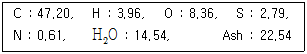
- 4129
- 4329
- 4890
- 4998
(정답률: 51%)
8. 연소가스는 연돌에 200℃로 들어가서 30℃가 되어 대기로 방출된다. 배기가스가 일정한 속도를 가지려면 연돌 입구와 출구의 면적비를 어떻게 하여야 하는가?
- 1.56
- 1.93
- 2.24
- 3.02
(정답률: 41%)
9. 다음 연소 범위에 대한 설명 중 틀린 것은?
- 연소 가능한 상한치와 하한치의 값을 가지고 있다.
- 연소에 필요한 혼합 가스의 농도를 말한다.
- 연소 범위에 좁으면 좁을수록 위험하다.
- 연소 범위의 하한치가 낮을수록 위험도는 크다.
(정답률: 76%)
10. 액체연료의 유동점은 응고점보다 몇 ℃ 높은가?
- 1.5
- 2.0
- 2.5
- 3.0
(정답률: 64%)
11. 도시가스의 조성을 조사하니 H2 30 v%, CO 6 v%, CH4 40 v%, CO2 24 v% 이었다. 이 도시가스를 연소하기 위해 필요한 이론 산소량 보다 20% 많게 공급했을 때 실제공기량은 약 몇 Nm3/Nm3 인가? (단, 공기 중 산소는 21 v% 이다.)
- 2.6
- 3.6
- 4.6
- 5.6
(정답률: 25%)
12. 배기가스 출구 연도에 댐퍼를 부착하는 주된 이유가 아닌 것은?
- 통풍력을 조절한다.
- 과잉공기를 조절한다.
- 가스의 흐름을 차단한다.
- 주연도, 부연도가 있는 경우에는 가스의 흐름을 바꾼다.
(정답률: 69%)
13. 가연성 혼합 가스의 폭발한계 측정에 영향을 주는 요소로 가장 거리가 먼 것은?
- 온도
- 산소농도
- 점화에너지
- 용기의 두께
(정답률: 81%)
14. 액체연료의 미립화 방법이 아닌 것은?
- 고속기류
- 충돌식
- 와류식
- 혼합식
(정답률: 58%)
15. 연돌내의 배기가스 비중량 γ1, 외기 비중량 γ2, 연돌의 높이가 H일 때 연돌의 이론 통풍력(Z)를 구하는 식은?
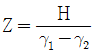
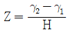
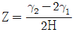
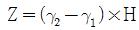
(정답률: 59%)
16. 다음 분진의 중력침강속도에 대한 설명으로 틀린 것은?
- 점도에 반비례한다.
- 밀도차에 반비례한다.
- 중력가속도에 비례한다.
- 입자직경의 제곱에 비례한다.
(정답률: 59%)
17. 메탄(CH4) 64kg을 연소시킬 때 이론적으로 필요한 산소량은 몇 kmol 인가?
- 1
- 2
- 4
- 8
(정답률: 59%)
18. 다음 중 연소효율(ηc)을 옳게 나타낸 식은? (단, HL : 저위발열량, Li : 불완전연소에 따른 손실열, Lc : 탄 찌꺼기 속의 미연탄소분에 의한 손실열이다.)
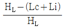
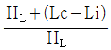
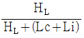
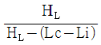
(정답률: 67%)
19. A회사에 입하된 석탄의 성질을 조사하였더니 회분 6%, 수분 3%, 수소 5% 및 고위발열량이 6000 kcal/kg 이었다. 실제 사용할 때의 저발열량은 약 몇 kcal/kg 인가?
- 3341
- 4341
- 5712
- 6341
(정답률: 54%)
20. 화염 면이 벽면 사이를 통과할 때 화염면에서의 발열량보다 벽면으로의 열손실이 더욱 커서 화염이 더 이상 진행하지 못하고 꺼지게 될 때 벽면 사이의 거리는?
- 소염거리
- 화염거리
- 연소거리
- 점화거리
(정답률: 69%)
2과목: 열역학
21. 다음 중 등엔트로피 과정에 해당하는 것은?
- 등적과정
- 등압과정
- 가역단열과정
- 가역등온과정
(정답률: 64%)
22. 이상적인 교축 과정(throttling process)에 대한 설명으로 옳은 것은?
- 압력이 증가한다.
- 엔탈피가 일정하다.
- 엔트로피가 감소한다.
- 온도는 항상 증가한다.
(정답률: 75%)
23. 랭킨사이클로 작동되는 발전소의 효율을 높이려고 할 때 초압(터빈입구의 압력)과 배압(복수기 압력)은 어떻게 하여야 하는가?
- 초압과 배압 모두 올림
- 초압을 올리고 배압을 낮춤
- 초압은 낮추고 배압을 올림
- 초압과 배압 모두 납춤
(정답률: 74%)
24. 다음 중 증발열이 커서 중형 및 대형의 산업용 냉동기에 사용하기에 가장 적정한 냉매는?
- 프레온-12
- 탄산가스
- 아황산가스
- 암모니아
(정답률: 67%)
25. 압력 1000kPa, 부피 1m3 의 이상기체가 등온과정으로 팽창하여 부피가 1.2 m3 이 되었다. 이때 기체가 한 일(kJ)은?
- 82.3
- 182.3
- 282.3
- 382.3
(정답률: 56%)
26. 열역학적계란 고려하고자 하는 에너지 변화에 관계되는 물체를 포함하는 영역을 말하는데 이 중 폐쇄계(closed system)는 어떤 양의 교환이 없는 계를 말하는가?
- 질량
- 에너지
- 일
- 열
(정답률: 48%)
27. 피스톤이 장치된 용기 속의 온도 T1[K], 압력 P1[Pa], 체적 V1[m3] 의 이상기체 m[kg]이 있고, 정압과정으로 체적이 원래의 2배가 되었다. 이때 이상기체로 전달된 열량은 어떻게 나타내는가? (단, Cv 는 정적비열이다.)
- mCvT1
- 2mCvT1
- mCvT1 + P1V1
- mCvT1 + 2P1V1
(정답률: 52%)
28. 카르로사이클에서 공기 1kg이 1사이클마다 하는 일이 100 kJ 이고 고온 227℃, 저온 27℃ 사이에서 작용한다. 이 사이클의 작동 과정에서 생기는 저온 열원의 엔트로피 증가(kJ/K)는?
- 0.2
- 0.4
- 0.5
- 0.8
(정답률: 34%)
29. 열역학 제1법칙에 대한 설명으로 틀린 것은?
- 열은 에너지의 한 형태이다.
- 일을 열로 또는 열을 일로 변환할 때 그 에너지 총량은 변하지 않고 일정하다.
- 제1종의 영구기관을 만드는 것은 불가능하다.
- 제1종의 영구기관은 공급된 열에너지를 모두 일로 전환하는 가상적인 기관이다.
(정답률: 52%)
30. 카르노 열기관이 600K의 고열원과 300K의 저열원 사이에서 작동하고 있다. 고열원으로부터 300kJ의 열을 공급받을 때 기관이 하는 일(kJ)은 얼마인가?
- 150
- 160
- 170
- 180
(정답률: 50%)
31. 비열비 1.3의 고온 공기를 작동 물질로 하는 압축비 5의 오토사이클에서 최소 압력이 206 kPa, 최고 압력이 5400 kPa 일 때 평균 유효압력(kPa)은?
- 594
- 794
- 1190
- 1390
(정답률: 34%)
32. 증기의 속도가 빠르고, 입출구 사이의 높이 차도 존재하여 운동에너지 및 위치에너지를 무시할 수 없다고 가정하고, 증기는 이상적인 단열상태에서 개방시스템 내로 흘러 들어가 단위질량유량당 축일(ws)을 외부로 제공하고 시스템으로부터 흘러나온다고 할 때, 단위질량유량당 축일을 어떻게 구할 수 있는가? (단, v는 비체적, P는 압력, V는 속도, g는 중력가속도, z는 높이를 나타내며, 하첨자 i는 입구, e는 출구를 나타낸다.)
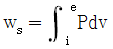
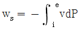
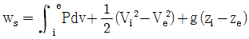
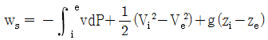
(정답률: 56%)
33. 랭킨사이클의 구성요소 중 단열 압축이 일어나는 곳은?
- 보일러
- 터빈
- 펌프
- 응축기
(정답률: 55%)
34. 암모니아 냉동기의 증발기 입구의 엔탈피가 377 kJ/kg, 증발기 출구의 엔탈피가 1668 kJ/kg 이며 응축기 입구의 엔탈피가 1894 kJ/kg 이라면 성능계수는 얼마인가?
- 4.44
- 5.71
- 6.90
- 9.84
(정답률: 56%)
35. 공기 표준 디젤사이크렝서 압축비가 17이고 단절비(cut-off ratio)가 3일 때 열효율(%)은? (단, 공기의 비열비는 1.4 이다.)
- 52
- 58
- 63
- 67
(정답률: 53%)
36. 표준 증기 압축식 냉동사이클의 주요 구성 요소는 압축기, 팽창밸브, 응축기, 증발기이다. 냉동기가 동작할 때 작동 유체(냉매)의 흐름의 순서로 옳은 것은?
- 증발기 → 응축기 → 압축기 → 팽창밸브 → 증발기
- 증발기 → 압축기 → 팽창밸브 → 응축기 → 증발기
- 증발기 → 응축기 → 팽창밸브 → 압축기 → 증발기
- 증발기 → 압축기 → 응축기 → 팽창밸브 → 증발기
(정답률: 64%)
37. 애드벌룬에 어떤 이상기체 100kg을 주입하였더니 팽창 후의 압력이 150 kPa, 온도 300K가 되었다. 애드벌룬의 반지름(m)은? (단, 애드벌룬은 완전한 구헝(sphere)이라고 가정하며, 기체상수는 250 J/kg·K 이다.)
- 2.29
- 2.73
- 3.16
- 3.62
(정답률: 30%)
38. 이상기체의 상태변화에 관련하여 폴리트로픽(Polytropic) 지수 n에 대한 설명으로 옳은 것은?
- 'n = 0'이면 단열 변화
- 'n = 1'이면 등온 변화
- 'n = 비열비'이면 정적 변화
- 'n = ∞'이면 등압 변화
(정답률: 70%)
39. 80℃의 물(엔탈피 335 kJ/kg)과 100℃의 건포화수증기(엔탈피 2676 kJ/kg)를 질량비 1 : 2 로 혼합하여 열손실 없는 정상유동과정으로 95℃의 포화액-증기 혼합물 상태로 내보낸다. 95℃ 포화상태에서의 포화액 엔탈피가 398 kJ/kg, 포화증기의 엔탈피가 2668 kJ/kg 이라면 혼합실 출구의 건도는 얼마인가?
- 0.44
- 0.58
- 0.66
- 0.72
(정답률: 31%)
40. 증기원동기의 랭킨사이클에서 열을 공급하는 과정에서 일정하게 유지되는 상태량은 무엇인가?
- 압력
- 온도
- 엔트로피
- 비체적
(정답률: 46%)
3과목: 계측방법
41. 다음 중 가장 높은 압력을 측정할 수 있는 압력계는?
- 부르동간 압력계
- 다이어프램식 압력계
- 벨로스식 압력계
- 링밸런스식 압력계
(정답률: 62%)
42. 피드백(feedback) 제어계에 관한 설명으로 틀린 것은?
- 입력과 출력을 비교하는 장치는 반드시 필요하다.
- 다른 제어계보다 정확도가 증가된다.
- 다른 제어계보다 제어 폭이 감소된다.
- 급수제어에 사용된다.
(정답률: 69%)
43. U자관 압력계에 대한 설명으로 틀린 것은?
- 측정 압력은 1 ~ 1000 kPa 정도이다.
- 주로 통풍력을 측정하는 데 사용된다.
- 측정의 정도는 모세관 현상의 영향을 받으므로 모세관 현상에 대한 보정이 필요하다.
- 수은, 물, 기름 등을 넣어 한쪽 또는 양쪽 끝에 측정압력을 도입한다.
(정답률: 60%)
44. 다음 중 유량측정의 원리와 유량계를 바르게 연결한 것은?
- 유체에 작용하는 힘 – 터빈 유량계
- 유속변화로 인한 압력차 – 용적식 유량계
- 흐름에 의한 냉각효과 – 전자기 유량계
- 파동의 전파 시간차 – 조리개 유량계
(정답률: 69%)
45. 수은 및 알코올 온도계를 사용하여 온도를 측정할 때 계측의 기본원리는 무엇인가?
- 비열
- 열팽창
- 압력
- 점도
(정답률: 65%)
46. 다음 각 물리량에 대한 SI 유도단위의 기호로 틀린 것은?
- 압력 - Pa
- 에너지 - cal
- 일률 - W
- 자기선속 – Wb
(정답률: 66%)
47. 산소의 농도를 측정할 때 기전력을 이용하여 분석, 계측하는 분석계는?
- 자기식 O2계
- 세라믹식 O2계
- 연소식 O2계
- 밀도식 O2계
(정답률: 61%)
48. 아르키메데스의 부력 원리를 이용한 액면측정 기기는?
- 차압식 액면계
- 퍼지식 액면계
- 기포식 액면계
- 편위식 액면계
(정답률: 64%)
49. 다음 중 온도는 국제단위계(SI 단위계)에서 어떤 단위에 해당하는가?
- 보조단위
- 유도단위
- 특수단위
- 기본단위
(정답률: 79%)
50. 가스열량 측정 시 측정 항목에 해당되지 않는 것은?
- 시료가스의 온도
- 시료가스의 압력
- 실내온도
- 실내습도
(정답률: 75%)
51. 방사온도계의 발신부를 설치할 때 다음 중 어떠한 식이 성립하여야 하는가? (단, ℓ : 렌즈로부터의 수열판까지의 거리, d : 수열판의 직경, L : 렌즈로부터 물체까지의 거리, D : 물체의 직경이다.)
- L/D ＜ ℓ/d
- L/D ＞ ℓ/d
- L/D = ℓ/d
- L/ℓ ＜ d/D
(정답률: 56%)
52. 다음 중에서 비접촉식 온도 측정 방법이 아닌 것은?
- 광고온계
- 색온도계
- 서미스터
- 광전관식 온도계
(정답률: 74%)
53. 1차 지연요소에서 시정수(T)가 클수록 응답속도는 어떻게 되는가?
- 응답속도가 빨라진다.
- 응답속도가 느려진다.
- 응답속도가 일정해진다.
- 시정수와 응답속도는 상관이 없다.
(정답률: 70%)
54. 가스 채취 시 주의하여야 할 사항에 대한 설명으로 틀린 것은?
- 가스의 구성 성분의 비중을 고려하여 적정 위치에서 측정하여야 한다.
- 가스 채취구는 외부에서 공기가 잘 통할 수 있도로 하여야 한다.
- 채취된 가스의 온도, 압력의 변화로 측정오차가 생기지 않도록 한다.
- 가스성분과 화학반응을 일으키지 않는 관을 이용하여 채취한다.
(정답률: 79%)
55. 직경 80mm인 원관내에 비중 0.9인 기름이 유속 4m/s로 흐를 때 질량유량은 약 몇 kg/s 인가?
- 18
- 24
- 30
- 36
(정답률: 43%)
56. 염화리툼이 공기 수증기압과 평형을 이룰대 생기는 온도저하를 저항온도계로 측정하여 습도를 알아내는 습도계는?
- 듀셀 노점계
- 아스만 습도계
- 광전관식 노점계
- 전기저항식 습도계
(정답률: 66%)
57. 보일러의 자동제어에서 인터록 제어의 종류가 아닌 것은?
- 압력초과
- 저연소
- 고온도
- 불착화
(정답률: 61%)
58. 다음 중 단위에 따른 차원식으로 틀린 것은?
- 동점도 : L2T-1
- 압력 : ML-1T-2
- 가속도 : LT-2
- 일 : MLT-2
(정답률: 59%)
59. 유체의 와류를 이용하여 측정하는 유량계는?
- 오벌 유량계
- 델타 유량계
- 로터리 피스톤 유량계
- 로터미터
(정답률: 54%)
60. 액주에 의한 압력 측정에서 정밀 측정을 할 때 다음 중 필요하지 않은 보정은?
- 온도의 보정
- 중력의 보정
- 높이의 보정
- 모세관 현상의 보정
(정답률: 70%)
4과목: 열설비재료 및 관계법규
61. 유체의 역류를 방지하기 위한 것으로 밸브의 무게와 밸브의 양면 간 압력차를 이용하여 밸브를 자동으로 작동시켜 유체가 한쪽 방향으로만 흐르도록 한 밸브는?
- 슬루스밸브
- 회전밸브
- 체크밸브
- 버터플라이밸브
(정답률: 83%)
62. 주철관에 대한 설명으로 틀린 것은?
- 제조방법은 수직법과 원심력법이 있다.
- 수도용, 배수용, 가스용으로 사용된다.
- 인성이 풍부하여 나사이음과 용접이음에 적합하다.
- 주철은 인장강도에 따라 보통 주철과 고급주철로 분류된다.
(정답률: 68%)
63. 다음 중 에너지이용 합리화법에 따라 에너지 다소비사업자에게 에너지관리 개선명령을 할 수 있는 경우는?
- 목표원단위보다 과다하게 에너지를 사용하는 경우
- 에너지관리 지도결과 10% 이상의 에너지효율 개선이 기대되는 경우
- 에너지 사용실적이 전년도보다 현저히 증가한 경우
- 에너지 사용계획 승인을 얻지 아니한 경우
(정답률: 70%)
64. 산화 탈산을 방지하는 공구류의 담금질에 가장 적합한 로는?
- 용융염류 가열로
- 직접저항 가열로
- 간접저항 가열로
- 아크 가열로
(정답률: 67%)
65. 에너지이용 합리화법에 따라 용접검사가 면제되는 대상범위에 해당되지 않는 것은?(오류 신고가 접수된 문제입니다. 반드시 정답과 해설을 확인하시기 바랍니다.)
- 용접이음이 없는 강관을 동체로 한 헤더
- 최고사용압력이 0.35 MPa 이하이고, 동체의 안지름이 600mm인 전열교환식 1종 압력용기
- 전열면적이 30m2 이하의 유류용 강철제 증기보일러
- 전열면적이 18m2 이하 이고, 최고사용압력이 0.35 MPa 인 온수보일러
(정답률: 45%)
66. 마그네시아질 내화물이 수증기에 의해서 조직이 약화되어 노벽에 균열이 발생하여 붕괴하는 현상은?
- 슬래킹 현상
- 더스팅 현상
- 침식 현상
- 스폴링 현상
(정답률: 69%)
67. 에너지이용 합리화법에 따라 에너지다소비사업자의 신고에 대한 설명으로 옳은 것은?
- 에너지다소비사업자는 매년 12월 31일까지 사무소가 소재하는 지역을 관할하는 시·도지사에게 신고하여야 한다.
- 에너지다소비사업자의 신고를 받은 시·도지사는 이를 매년 2월 말일까지 산업통상자원부장관에게 보고하여야 한다.
- 에너지다소비사업자의 신고에는 에너지를 사용하여 만드는 제품·부가가치 등의 단위당 에너지이용효율 향상목표 또는 온실가스배출 감소목표 및 이행방법을 포함하여야 한다.
- 에너지다소비사업자는 연료·열의 연간 사용량의 합계가 2천 티오이 이상이고, 전력의 연간 사용량이 4백만 킬로 와트시 이상인 자를 의미한다.
(정답률: 55%)
68. 셔틀요(shuttle kiln)의 특징으로 틀린 것은?
- 가마의 보유열보다 대차의 보유열이 열 적약의 요인이 된다.
- 급량파가 생기지 않을 정도의 고온에서 제품을 꺼낸다.
- 가마 1개당 2대 이상의 대차가 있어야 한다.
- 작업이 불편하여 조업하기가 어렵다.
(정답률: 69%)
69. 두게 230mm의 내화벽돌, 114mm의 단열벽돌, 230mm의 보통벽돌로 된 노의 평면 벽에서 내벽면의 온도가 1200℃이고 외벽면의 온도가 120℃일 때, 노벽 1m2당 열손실(W)은? (단, 내화벽돌, 단열벽돌, 보통벽돌의 열전도도는 각각 1.2, 0.12, 0.6 W/m·℃ 이다.)
- 376.9
- 563.5
- 708.2
- 1688.1
(정답률: 41%)
70. 에너지이용 합리화법에 따라 에너지 저장의무 부과 대상자가 아닌 자는?
- 전기사업법에 따른 전기 사업자
- 석탄산업법에 따른 석탄가공업자
- 액화가스사업법에 따른 액화가스 사업자
- 연간 2만 석유환산톤 이상의 에너지를 사용하는 자
(정답률: 61%)
71. 다음 중 최고사용온도가 가장 낮은 보온재는?
- 유리면 보온재
- 페놀 폼
- 펄라이트 보온재
- 폴리에틸렌 폼
(정답률: 69%)
72. 요로를 균일하게 가열하는 방법이 아닌 것은?
- 노내 가스를 순환시켜 연소 가스량을 많게 한다.
- 가열시간을 되도록 짧게 한다.
- 장염이나 축차연소를 행한다.
- 벽으로부터의 방사열을 적절히 이용한다.
(정답률: 71%)
73. 에너지이용 합리화법에 따라 에너지 절약형 시설투자 시 세제지원이 되는 시설투자가 아닌 것은?
- 노후 보일러 등 에너지다소비 설비의 대체
- 열병합발전사업을 위한 시설 및 기기류의 설치
- 5% 이상의 에너지절약 효과가 있다고 인정되는 설비
- 산업용 요로 설비의 대체
(정답률: 64%)
74. 에너지이용 합리화법에 따라 에너지이용 합리화 기본계획에 대한 설명으로 틀린 것은?
- 기본계획에는 에너지이용효율의 증대에 관한 사항이 포함되어야 한다.
- 기본계획에는 에너지절약형 경제구조로의 전환에 관한 사항이 포함되어야 한다.
- 산업통상자원부장관은 기본계획을 수립하기 위하여 필요하다고 인정하는 경우 관계 행정기관의 장에게 필요자료 제출을 요청할 수 있다.
- 시·도지사는 기본계획을 수립하려면 관계 행정기관의 장과 협의한 후 산업통상자원부장관의 심의를 거쳐야 한다.
(정답률: 60%)
75. 에너지이용 합리화법에서 규정한 수요관리 전문기관에 해당하는 것은?
- 한국가스안전공사
- 한국에너지공단
- 한국전력공사
- 전기안전공사
(정답률: 80%)
76. 에너지이용 합리화법에 따라 공공사업주관자는 에너지사용계획의 조정 등 조치 요청을 받은 경우에는 산업통상자원부령으로 정하는 바에 따라 조치 이행계획을 작성하여 제출하여야 한다. 다음 중 이행계획에 반드시 포함되어야 하는 항목이 아닌 것은?
- 이행 예산
- 이행 주체
- 이행 방법
- 이행 시기
(정답률: 65%)
77. 보온재의 열전도율에 대한 설명으로 옳은 것은?
- 열전도율이 클수록 좋은 보온재이다.
- 보온재 재료의 온도에 관계없이 열전도율은 일정하다.
- 보온재 재료의 밀도가 작을수록 열전도율은 커진다.
- 보온재 재료의 수분이 적을수록 열전도율은 작아진다.
(정답률: 58%)
78. 다음 중 에너지이용 합리화법에 따른 에너지사용계획의 수립대상 사업이 아닌 것은?
- 고속도로건설사업
- 관광단지개발사업
- 항만건설사업
- 철도건설사업
(정답률: 63%)
79. 다음 중 규석벽돌로 쌓은 가마 속에서 소성하기에 가장 적절하지 못한 것은?
- 규석질 벽돌
- 샤모트질 벽돌
- 납석질 벽돌
- 마그네시아질 벽돌
(정답률: 63%)
80. 에너지법에 의한 에너지 총 조사는 몇 년 주기로 시행하는가?
- 2년
- 3년
- 4년
- 5년
(정답률: 67%)
5과목: 열설비설계
81. 보일러에서 스케일 및 슬러지의 생성 시 나타나는 현상에 대한 설명으로 가장 거리가 먼 것은?
- 스케일이 부착되면 보일러 전열면을 과열시킨다.
- 스케일이 부착되면 배기가스 온도가 떨어진다.
- 보일러에 연결한 코크, 밸브, 그 외의 구멍을 막히게 한다.
- 보일러 전열 성능을 감소시킨다.
(정답률: 70%)
82. 보일러의 부대장치 중 공기예열기 사용 시 나타나는 특징으로 틀린 것은?
- 과잉공기가 많아진다.
- 가스온도 저하에 따라 저온부식을 초래할 우려가 있다.
- 보일러 효율이 높아진다.
- 질소산화물에 의한 대기오염의 우려가 있다.
(정답률: 45%)
83. 보일러수 1500kg 중에 불순물이 30g이 검출되었다. 이는 몇 ppm 인가? (단, 보일러수의 비중은 1 이다.)
- 20
- 30
- 50
- 60
(정답률: 47%)
84. 열사용 설비는 많은 전열면을 가지고 있는데 이러한 전열면이 오손되면 전열량이 감소하고, 열설비의 손상을 초래한다. 이에 대한 방지대책으로 틀린 것은?
- 황분이 적은 연료를 사용하여 저온부식을 방지한다.
- 첨가제를 사용하여 배기가스의 노점을 상승시킨다.
- 과잉공기를 적게 하며 저공기비 연소를 시킨다.
- 내식성이 강한 재료를 사용한다.
(정답률: 52%)
85. 노통보일러에 가셋트스테이를 부착할 경우 경판과의 부착부 하단과 노통 상부 사이에는 완충폭(브레이징 스페이스)이 있어야 한다. 이 때 경판의 두께가 20mm인 경우 완충폭은 최소 몇 mm 이상이어야 하는가?
- 230
- 280
- 320
- 350
(정답률: 48%)
86. 보일러의 효율 향상을 위한 운전 방법으로 틀린 것은?
- 가능한 정격부하로 가동되도록 조업을 계획한다.
- 여러 가지 부하에 대해 열정산을 행하여, 그 결과로 얻은 결과를 통해 연소를 관리하다.
- 전열면의 오손, 스케일 등을 제거하여 전열효율을 향상시킨다.
- 블로우 다운을 조업중지 때마다 행하여, 이상 물질이 보일러 내에 없도록 한다.
(정답률: 69%)
87. 다음 보기의 특징을 가지는 증기트랩의 종류는?
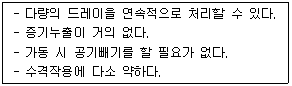
- 플로트식 트랩
- 버킷형 트랩
- 바이메탈식 트랩
- 디스크식 트랩
(정답률: 62%)
88. 지름 5cm의 파이프를 사용하여 매 시간 4t의 물을 공급하는 수도관이 있다. 이 수도관에서의 물의 속도(m/s)는? (단, 물의 비중은 1 이다.)
- 0.12
- 0.28
- 0.56
- 0.93
(정답률: 42%)
89. 용접이음에 대한 설명으로 틀린 것은?
- 두께의 한도가 없다.
- 이음효율이 우수하다.
- 폭음이 생기지 않는다.
- 기밀성이나 수밀성이 낮다.
(정답률: 68%)
90. 내경이 150mm인 연동제 파이프의 인장강도가 80 MPa 이라 할 때, 파이프의 최고사용압력이 4000 kPa 이면 파이프의 최소두께(mm)는? (단, 이음효율은 1, 부식여유는 1mm, 안전계수는 1로 한다.)
- 2.63
- 3.71
- 4.75
- 5.22
(정답률: 31%)
91. 점식(pitting)부식에 대한 설명으로 옳은 것은?
- 연료 내의 유황성분이 연소할대 발생하는 부식이다.
- 연료 중에 함유된 바나듐에 의해서 발생하는 부식이다.
- 산소농도차에 의한 전기 화학적으로 발생하는 부식이다.
- 급수 중에 함유된 암모니아가스에 의해 발생하는 부식이다.
(정답률: 52%)
92. 다음 중 스케일의 주성분에 해당되지 않는 것은?
- 탄산칼슘
- 규산칼슘
- 탄산마그네슘
- 과산화수소
(정답률: 73%)
93. 줄-톰슨계수(Joule-Thomson coefficient, μ)에 대한 설명으로 옳은 것은?
- μ의 부호는 열량의 함수이다.
- μ의 부호는 온도의 함수이다.
- μ가 (-)일 때 유체의 온도는 교축과정 동안 내려간다.
- μ가 (+)일 때 유체의 온도는 교축과정 동안 일정하게 유지된다.
(정답률: 68%)
94. 물을 사용하는 설비에서 부식을 초래하는 인자로 가장 거리가 먼 것은?
- 용존 산소
- 용존 탄산가스
- pH
- 실리카
(정답률: 71%)
95. 보일러의 만수보존법에 대한 설명으로 틀린 것은?
- 밀폐 보존방식이다.
- 겨울철 동결에 주의하여야 한다.
- 보통 2~3개월의 단기보존에 사용된다.
- 보일러 수는 pH6 정도 유지되도록 한다.
(정답률: 74%)
96. 테르밋(themit)용접에서 테르밋이란 무엇과 무엇의 혼합물인가?
- 붕사와 붕산의 분말
- 탄소와 규소의 분말
- 알루미늄과 산화철의 분말
- 알루미늄과 납의 분말
(정답률: 65%)
97. 노통보일러 중 원통형의 노통이 2개 설치된 보일러를 무엇이라고 하는가?
- 랭커셔보일러
- 라몬트보일러
- 바브콕보일러
- 다우삼보일러
(정답률: 71%)
98. 흑체로부터의 복사에너지는 절대온도의 몇 제곱에 비례하는가?
- √2
- 2
- 3
- 4
(정답률: 70%)
99. 보일러 동체, 드럼 및 일반적인 원통형 고압용기의 동체두께(t)를 구하는 계산식으로 옳은 것은? (단, P는 최고사용압력, D는 원통 안지름, σ는 허용인장응력(원주방향) 이다.)
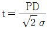
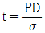
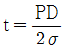
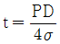
(정답률: 62%)
100. 아래 표는 소용량 주철제보일러에 대한 정의이다. (가), (나) 안에 들어갈 내용으로 옳은 것은?
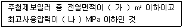
- (가) 4, (나) 1
- (가) 5, (나) 0.1
- (가) 5, (나) 1
- (가) 4, (나) 0.1
(정답률: 62%)